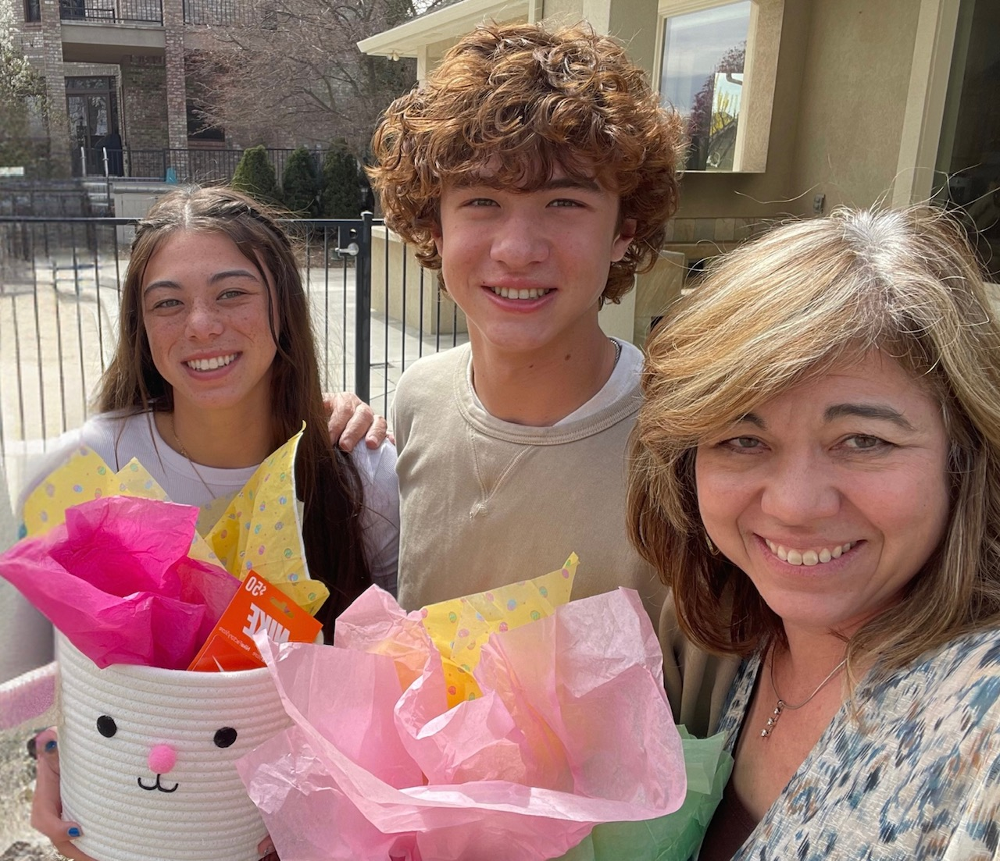

Kellee Anne Balcom was born in Pasco, Washington on April 23rd, 1969. She grew up in Kennewick, Washington, and graduated from Kamiakin High School in 1987. She then went to Whitman College in Walla Walla, Washington, where she played colligiate basketball for 4 years. She graduated with a bachelor's degree in sociology and moved back to Kennewick.
She became an important part of the Tri-Cities community, starting the first Boys and Girls Club and working within the juvenile court system. She married Jared Balcom in 2003 and had McKaila in 2005 and Will in 2007.
Kellee became an executive director for the Washington State Potato Foundation in 2003 and after having kids she became a consultant for the Carson Kolzig Foundation and the Pasco Education Foundation. She currently still works for the Washington State Potato Foundation, in addition to volunteering for the Pasco Police Foundation and Tri-Cities Prep High School.